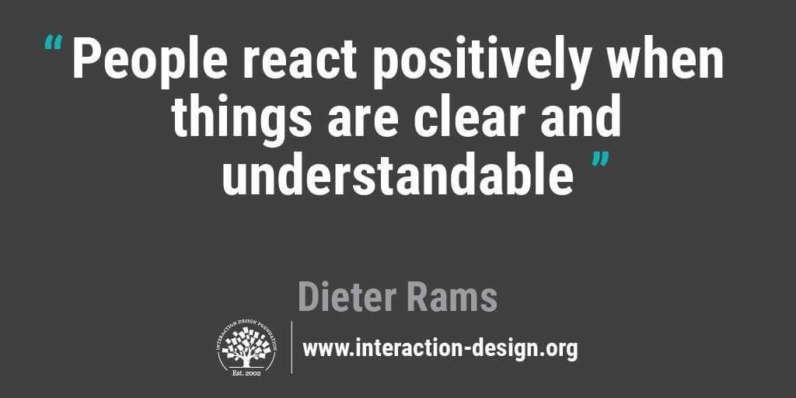
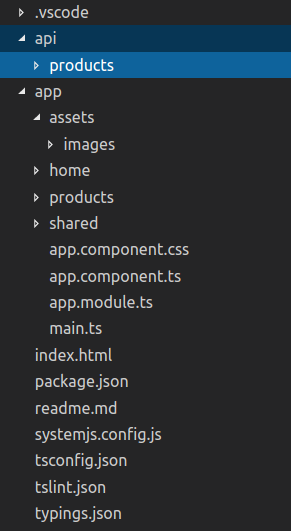

Angular Best Practices

Takeaway
- Application Structure
- Coding - Conventions
- Development Workflow
Application Structure
Purpose
Approach
Folder Structure
Consideration
- Application size
- Reusability - DRY
- Easy to
- Locate
- Identify
Implementation
- Keep hierarchy as flat as possible
- Divide modules based on features/view
- Leverage shared solely for utils. and "common" components/services/pipes
- Example
Coding - Conventions
Covers
- Coding - module coverage, component span, service employment
- Naming conventions for everything associated with application
Single Responsibility Principle
Ensures better readability, testable code
Naming
Folder
- Consistent
- Purpose
- Relation

Naming
Symbols
- use dashes to separate words
- use dots to separate description
- feature.type.ts
- .service, .component, .pipe, .module, .spec, and .directive
- Example
- app.component.ts
- products.module.ts
- products-routing.module.ts
- products.component.ts
- product-list.component.ts
- product-detail.component.ts
- init-caps.pipe.ts
- user-profile.service.ts
Coding Conventions
- Naming classes, interfaces: Upper Camel Case
- Properties and methods: lower Camel Case
- Imports: Separate third party imports and application imports by leaving a blank line. Order imports alphabetized by module
Services
- Services whose instance is expected to be shared should be in CoreModule. E.g. ExceptionService, LoggerService.
- Use service for complex/reusable logic. Hence, limit component logic to only that required for the view.
export class ProductService {
constructor(private http: Http) { }
getProducts() {
return this.http.get('api/products')
.map((response: Response) => response.json().data);
}
}
Lifecycle Hooks
Always use lifecycle hooks to define actions for important events
@Component({
selector: 'buy-item-button',
template: ``
})
export class BuyItemComponent implements OnInit {
ngOnInit() {
console.log('The component is initialized');
}
}
Pretty Code
function linkify( selector ) {
if( supports3DTransforms ) {
var nodes = document.querySelectorAll( selector );
for( var i = 0, len = nodes.length; i < len; i++ ) {
var node = nodes[i];
if( !node.className ) {
node.className += ' roll';
}
}
}
}
Code syntax highlighting courtesy of highlight.js.
Take a Moment
Press B or . on your keyboard to pause the presentation. This is helpful when you're on stage and want to take distracting slides off the screen.
Much more
- Right-to-left support
- Extensive JavaScript API
- Auto-progression
- Parallax backgrounds
- Custom keyboard bindings